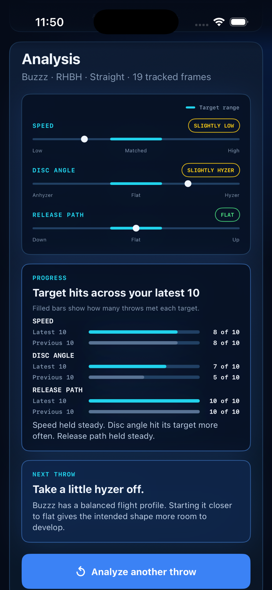
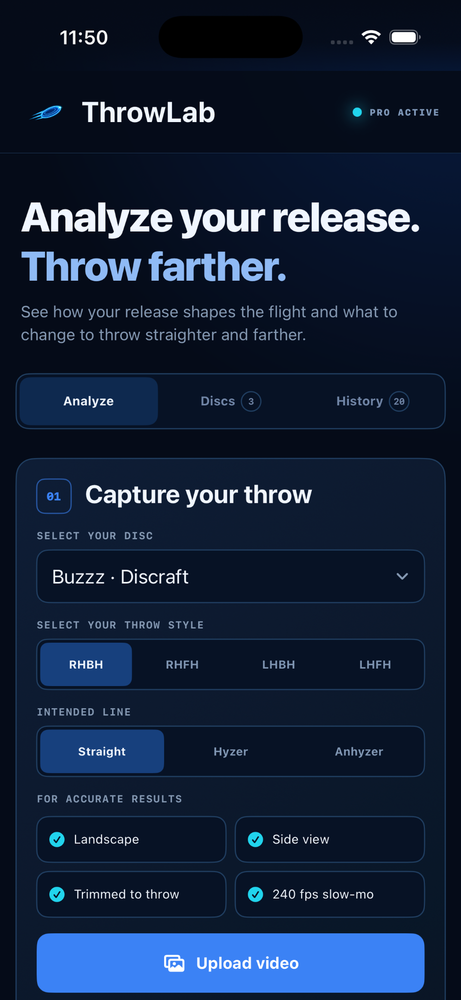
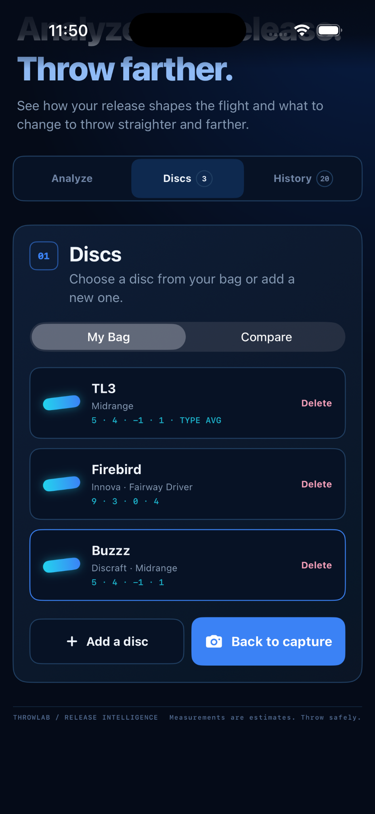
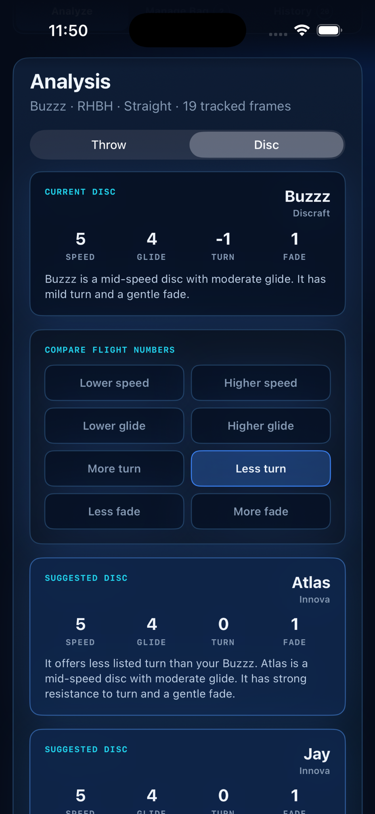
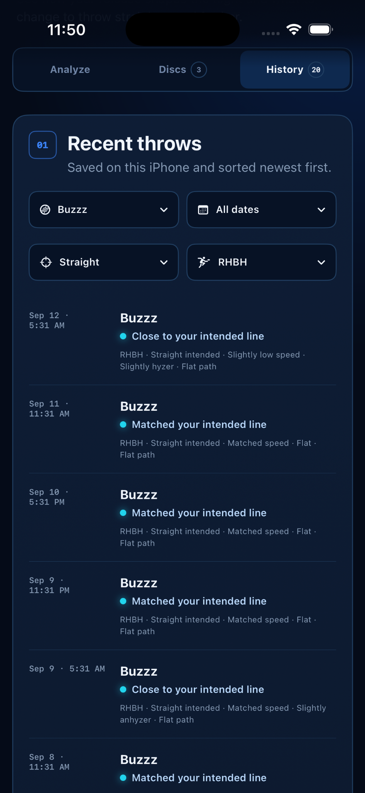

Speed
See whether your release speed is low, matched, or high for the selected disc.
Analyze your release.Throw farther.
ThrowLab analyzes slow-motion video of your disc golf throw. See your speed, disc angle, and release path, compare recent throws, and get one adjustment for the next throw.

Progress
See how many recent throws reached the target for speed, disc angle, and release path. Each measurement is tracked separately.
Progress starts with your latest five qualifying throws. At 10 throws, it compares the latest five with the previous five. At 20, it moves to sets of 10.
Only throws with the same disc, intended line, and throw style are compared.
Throw analysis
The marker shows the measured result, and the cyan segment marks the target range. Speed is reported as a range rather than an exact miles-per-hour estimate.
See whether your release speed is low, matched, or high for the selected disc.
See whether the disc leaves your hand on anhyzer, flat, or hyzer, including the ranges between them.
See whether the disc is moving downward, flat, or upward immediately after release.
How it works

Choose your disc, throw style, and intended line.
Use a trimmed, landscape slow-motion clip with the full throw visible.
Find a clear mid-flight frame and tap the disc to begin tracking.
See the three readings, progress, and one adjustment for the next throw.
Discs
Choose a disc from My Bag before a throw, or switch to Compare to find two alternatives with the change you want.

Look for lower or higher speed, lower or higher glide, more or less turn, or more or less fade. Each result includes the manufacturer, flight numbers, and a short explanation.

Throw history
Every completed analysis is saved on your iPhone. Filter by disc, date, intended line, or throw style to review the releases used in your progress history.

Recording setup
Keep the full throw visible and leave room for the disc to travel after release.
About accuracy: Results are estimates from video, not launch-monitor measurements. Camera position, lighting, framing, blur, and disc visibility can affect the result.
ThrowLab
ThrowLab estimates speed, disc angle, and release path from slow-motion video. It shows each reading against a target range and identifies one adjustment for the next throw.
ThrowLab tracks target hits for speed, disc angle, and release path separately. Only throws with the same disc, intended line, and throw style are compared. Progress begins with sets of five throws and expands to sets of 10 after 20 qualifying throws.
No. ThrowLab uses a qualitative speed range instead of claiming an exact miles-per-hour reading.
The cyan segment on each gauge marks its target range. The speed target is based on the selected disc, the disc-angle target is based on the intended line, and the release-path target is flat.
Yes. ThrowLab supports RHBH, RHFH, LHBH, and LHFH.
Yes. The disc does not need to land on camera. Keep it visible for several frames after release.
No. ThrowLab focuses on the disc at and immediately after release. It does not score footwork, reach-back, brace, or hip rotation.
No. Throw videos are processed on your iPhone and are not uploaded for analysis. No account is required.
ThrowLab Pro is $4.99 per month or $39.99 per year after a 3-day free trial. Apple charges your Apple Account when the trial ends unless you cancel at least 24 hours before renewal.
On-device processing
Throw videos are processed on your device and are not uploaded for analysis. No account is required.
ThrowLab Pro
Try every analysis feature free for 3 days. Continue for $4.99/month or $39.99/year.
Cancel at least 24 hours before the trial ends in Settings under your Apple Account and Subscriptions.